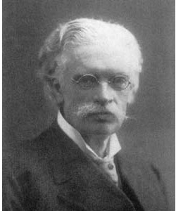

Gösta Mittag-Leffler (16 mars 1846 [Stockholm] - 7 juillet 1927 [Stockholm])
Gösta Mittag-Leffler était un mathématicien suédois, le plus important et le plus influent de la fin du XIXè et du début du XXè siècle. Il fut notamment le premier professeur de la nouvelle université de Stockholm, il fonda le journal Acta Mathematica et fit de lui l'un des meilleurs journaux de mathématiques du monde. En donnant sa maison et sa bibliothèque à l'Académie des Sciences suédoise, il impulsa la création d'un institut de mathématiques aujourd'hui connu sous le nom d'Institut Mittag-Leffler.
Gösta Mittag-Leffler est né le 16 mars 1846, fils de John Leffler et de Gustava Mittag. Alors qu'il est enfant, son père devient directeur d'une école de Stockholm et est un temps élu membre du parlement. Ainsi, le futur mathématicien vit dans un milieu favorable à son développement intellectuel. Au lycée, il montre très vite son goût et son talent pour les mathématiques. Il étudie de 1865 à 1872 à l'Université d'Uppsala, sous la direction de Dillner. La thèse qu'il soutient en 1872 porte sur le principe de l'argument.
L'année suivante, bénéficiaire d'une bourse qui l'oblige à passer trois ans hors de la Suède, il part à Paris où il suit notamment les cours de Hermite. En 1874, il s'en va à Berlin. Il y rencontre Weierstrass qui sera une grande source d'inspiration pour toute sa carrière. En particulier, Mittag-Leffler suivra la présentation moderne, rigoureuse et précise de l'analyse, telle que conçue par Weierstrass.
En 1875, Mittag-Leffler obtient un poste de professeur à Helsinki (alors appelée Helsingfors). Il se marie lors de ce séjour en Finlande avec Signe Lindfors, qui est issue d'une famille très riche. En 1880, il revient en Suède en devenant le premier professeur de l'Université de Stockholm récemment créée. Il y déploie une énergie extraordinaire. Il crée ainsi le journal Acta Mathematica, dont le premier numéro paraît en décembre 1882. Grâce à un intense travail de persuasion, entrepris notamment lors de son voyage de noces à travers l'Europe, les meilleurs mathématiciens (dont Poincaré, Cantor,…) publient dans ce journal et en font le journal de référence qu'il est encore aujourd'hui. Mittag-Leffler s'investit également beaucoup pour que Sofia Kovaleskaya obtienne un poste à l'Université de Stockholm. Il est alors très difficile, pour ne pas dire inenvisageable, qu'une femme obtienne une chaire dans une université, et le soutien de Mittag-Leffler se heurte à de nombreux opposants. Finalement, Sofia Kovaleskaya peut travailler à l'Université de Stockholm de 1884 à sa mort en 1891, et ce succès montre que Mittag-Leffler est bien le plus influent des professeurs de Stockholm.
Comme le montre cette biographie, Mittag-Leffler excelle dans l'organisation et la gestion des affaires. Il amasse une certaine fortune et se fait construire une vaste villa à Djursholm, dans la banlieue de Stockholm. Il y installe son activité professionnelle. En 1916, alors qu'il a 70 ans, lui et sa femme font don de cette maison, de leur bibliothèque et de leur fortune à l'Académie des Sciences de Suède. Il s'agit alors de créer un institut de mathématiques dirigé par un professeur, où des invités passeraient un an à étudier des problèmes spécialisés de mathématiques. Cependant, après la mort de Mittag-Leffler en 1927 et en raison de la crise, les ressources sont insuffisantes pour maintenir l'activité de l'institut. Elle ne reprend que dans les années 1960, sous l'impulsion de Lennart Carleson.
Sur le plan mathématique, Mittag-Leffler est l'auteur de plus de 100 articles. Il s'est surtout consacré, suivant les travaux de son maitre Weierstrass, à l'étude des fonctions analytiques. Il est notamment connu pour son théorème d'existence d'une fonction méromorphe dont les pôles et les parties singulières sont prescrites.
Terminons cette biographie en mentionnant une légende tenace qui veut qu'il n'y ait pas de prix Nobel en mathématiques en raison d'une rivalité amoureuse entre Alfred Nobel et Gösta Mittag-Leffler, mais on ne dispose d'aucune preuve historique de sa véracité.
Source : La plupart des informations de cette biographie sont issus de Mathematics in Sweden before 1950, par John Garding.